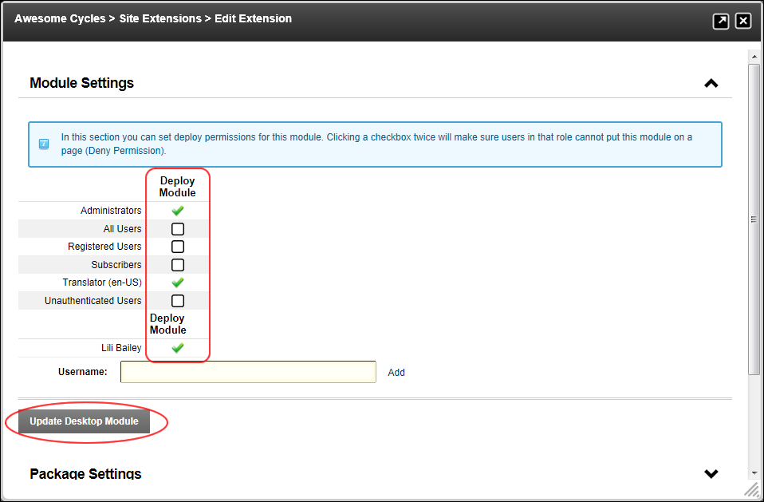

Setting Permissions to Deploy a Module
How to assign permissions to deploy (add) a module to a page using the Admin Extensions module.
- Navigate to Admin > Advanced Settings >
 Extensions.
Extensions.
- Expand the Modules section.
- Click the Edit
 button beside the required module.
button beside the required module.
- Expand the Module Settings section.
- Optional. To set permission for individual users, complete the following:
- In the Username text box, enter a username.
- Click the Add button.
- Optional. At Filter By Group, select a Role Group to view the related roles. Note: This field is only displayed if one or more role groups have been created. If you do choose to filter roles by a group, you can choose to make another role group selection or return to the main roles at any time. Any changes you make to permissions will be retained ready for you to update.
- Select the permissions for each role/username as follows:
 Permission Granted: Permission is granted to deploy this module.
Permission Granted: Permission is granted to deploy this module.
 Not Specified: Permission is not specified.
These roles/users are unable to deploy the module unless they belong to another role that has been granted permissions.
Not Specified: Permission is not specified.
These roles/users are unable to deploy the module unless they belong to another role that has been granted permissions. Permission Denied: Permission to deploy this module is denied.
These roles/users are unable to deploy the module regardless of whether they belong to another role that has been granted permissions.
Permission Denied: Permission to deploy this module is denied.
These roles/users are unable to deploy the module regardless of whether they belong to another role that has been granted permissions.
- Click the Update Desktop Module button.
